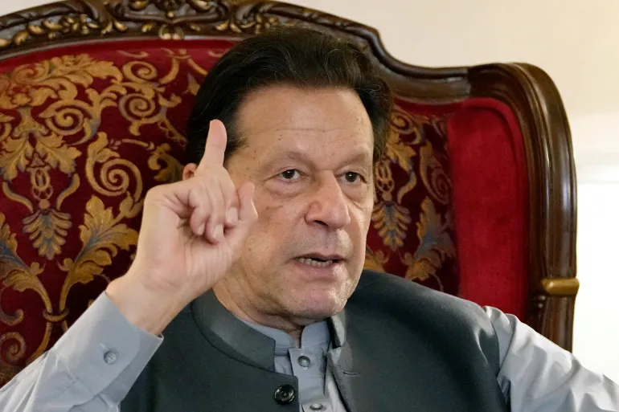

LATEST |
PAKISTAN |
WORLD |
BUSINESS & ECONOMY |
SPORTS |
LIFE & STYLE |
VIDEOS |
- Watch Live
- Hammas Israel Attack
- Election 2024
|
Pakistan poll body rejects ex-PM Imran Khan’s nomination for 2024 elections
The jailed leader’s bid to overturn his disqualification in the wake of conviction in a corruption case rejected by election body.

Former Pakistani Prime Minister Imran Khan [File: KM Chaudary/AP Photo]
| 30 DEC 2023
Pakistan’s election body has rejected former Prime Minister Imran Khan’s nomination to contest the 2024 parliamentary elections, with Khan’s Pakistan Tahreek-e Insaf (PTI) party accusing authorities of stopping most of its candidates from participating in the elections due in February.
The 71-year-old former cricket star, who is serving a three-year prison sentence for corruption, was barred from politics for five years by the Election Commission of Pakistan (ECP). But he still filed nomination papers on Friday.
Keep Reading
India formally asks Pakistan to extradite Mumbai attacks suspect
Pakistan’s Imran Khan gets bail in state secrets case ahead of key election
What explains the dramatic rise in armed attacks in Pakistan?
Pakistan’s Imran Khan delivers AI-generated speech to campaign from prison